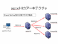
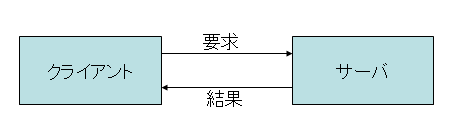
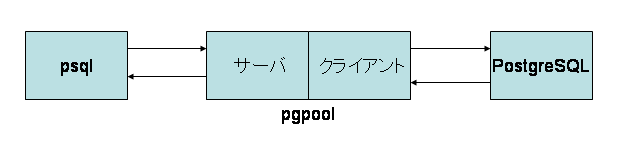
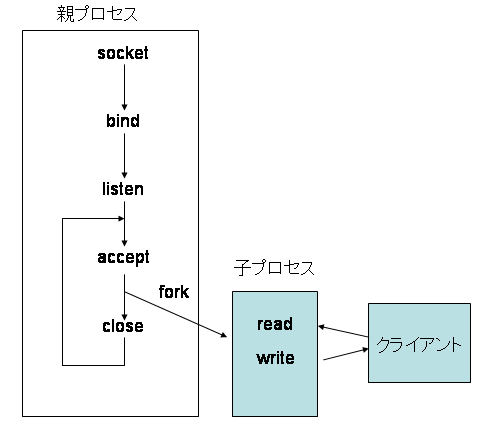
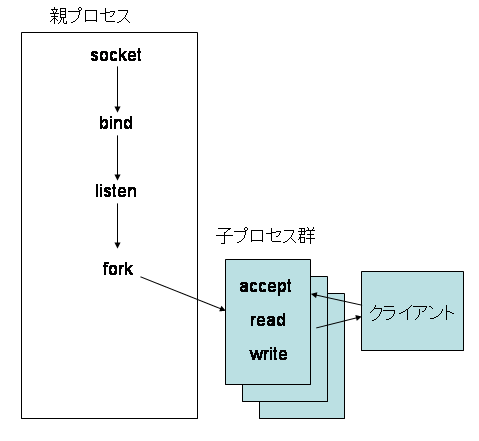

<!DOCTYPE HTML PUBLIC "-//W3C//DTD HTML 4.01 Transitional//EN">
<html>
<head>
<meta http-equiv="content-type" content="text/html;charset=iso-2022-jp" />
<link rev=made href="mailto:ishii@sraoss.co.jp" />
<link href="icon.ico" rel="shorcut icon" />
<title>PostgreSQL information page</title>
<style type="text/css">
<!--
td {
  background-image:url(midashi.png);
  width: 1024;
  font-weight: bold
}

-->
</style>
</head>
<body bgcolor="#ffffff">
<!-- hhmts start -->
Last modified: Sun Aug 23 14:40:32 JST 2009
<!-- hhmts end -->

<h1>PostgreSQL$B$H%M%C%H%o!<%/%W%m%0%i%_%s%0(B(1/2)</h1>

<h2>$B%M%C%H%o!<%/%W%m%0%i%_%s%0!"%5!<%P%W%m%0%i%_%s%0$N;vNc$H$7$F$N(Bpgpool-II</h2>
<p>
$B:#2s$O%M%C%H%o!<%/%W%m%0%i%_%s%0!"%5!<%P%W%m%0%i%_%s%0$N;vNc$H$7$F(Bpgpool-II$B$r<h$j>e$2$^$9!#(B
$B6qBNE*$K$O!"%=%1%C%H$N;H$$J}$d(Bpre-fork$B%F%/%K%C%/$N2r@b$r9T$$$^$9!#(B
</p>
<p>
$B$^$?!"(Bpgpool-II$B$O(BPostgreSQL$B$N(Bproxy$B%5!<%P$G$"$k$H$b8@$($^$9!#(B
$B$D$^$j(BPostgreSQL$B$NDL?.%W%m%H%3%k$r<BAu$7$F$$$k$o$1$G!"$=$&$$$C$?LL$+$i$b(Bpgpool-II$B$r2r@b$7$?$$$H;W$$$^$9!#(B
</p>
<p>
$B:#2s2r@b$NBP>]$H$9$k$N$O8=;~E@$G:G?70BDjHG$G$"$k(B pgpool-II 2.2$B$G$9!#%=!<%9%3!<%I$O(B
<a href="http://pgfoundry.org/projects/pgpool/">http://pgfoundry.org/projects/pgpool/</a>$B$+$iF~<j$G$-$^$9!#(B
</p>

<h2>pgpool-II$B$H$O(B</h2>
<p>
<a href="pgpool-II-arch.png"></a>
pgpool-II$B$H$O!"(BPostgreSQL$B@lMQ$N%l%W%j%1!<%7%g%s%=%U%H$G$9!#(B
pgpool-II$B$O(BPostgreSQL$B$N%/%i%$%"%s%H$H(BPostgreSQL$B%5!<%P$N4V$K3d$j9~$`7A$G;HMQ$7$^$9!#(B
<br clear="all">
</p>

<p>
pgpool-II$B$O%/%i%$%"%s%H$+$i8+$k$H(BPostgreSQL$B%5!<%P$K8+$(!"F1;~$K(BPostgreSQL$B%5!<%P$+$i8+$k$H(BPostgreSQL$B$N%/%i%$%"%s%H$K8+$($k$h$&$K$J$C$F$*$j!"$$$o$P(BPostgreSQL$B$N(Bproxy$B%5!<%P$H$7$FF0:n$7$^$9!#(B
PostgreSQL$B$N%"%W%j%1!<%7%g%s$+$i(Bpgpool$B$rMxMQ$9$k$?$a$K%"%W%j%1!<%7%g%s%W%m%0%i%`$NJQ99$O$[$H$s$II,MW$"$j$^$;$s!#(B
PostgreSQL$B%5!<%P$NJ}$O0l@ZJQ99$O$$$j$^$;$s!#(B
</p>

<h2>$B%M%C%H%o!<%/%"%W%j%1!<%7%g%s$N4pAC(B</h2>
<p>
Linux$B$J$I$N6aBeE*$J(BOS$B$G$O!"%W%m%0%i%`$OFHN)$7$?<B9TMWAG$KJ,3d$5$l$F4IM}$5$l$F$$$^$9!#(B
UNIX$B$d(BLinux$B$G$O!"$=$NC10L$O(B<b>$B%W%m%;%9(B</b>(process)$B$H8F$P$l$F$$$^$9!#(B
$B%W%m%;%9$O$*8_$$$KFHN)$7$F$*$j!"$=$l$>$lAj<j$NF0$-$K4X78$J$/<B9T$5$l!"$^$?%a%b%j6u4V$b$*8_$$$KFHN)$7$F$$$^$9!#$3$l$K$h$C$F!"$"$k%W%m%;%9$,%P%0$J$I$K$h$C$F0[>o$J>uBV$K$J$C$F$b$[$+$N%W%m%;%9$K$O1F6A$rM?$($J$$$H$$$&%a%j%C%H$,@8$^$l$^$9!#(B
$B0lJ}$G!"%W%m%;%9F1;N$rO"7H$5$;$k$?$a$K$O2?$+FCJL$J;E3]$1$,I,MW$K$J$j$^$9!#(B
</p>
<p>
$B%W%m%;%9F1;N$rO"7H$5$;$k$?$a$N;E3]$1$NBeI=E*$J$b$N$H$7$F$O!"0J2<$N$h$&$J$b$N$,$"$j$^$9!#(B
<ol>
<li>$B%7%0%J%k(B
<li>$B%;%^%U%)(B
<li>$B6&M-%a%b%j(B
<li>$B%Q%$%W(B
<li>$B%M%C%H%o!<%/DL?.(B
</ol>
</p>

<p>
$B$3$N$&$A(B1)$B$+$i(B4)$B$^$G$OF1$8%[%9%H>e$N%W%m%;%9$N4V$NO"7H$KMQ$$$i$l$^$9!#(B
PostgreSQL$B$d(Bpgpool-II$B$O0[$J$k%[%9%H$N4V$G$NDL?.$r9T$&I,MW$,$"$j!"$=$l$,2DG=$J$N$O(B5)$B$@$1$G$9!#%M%C%H%o!<%/DL?.$r9T$&%"%W%j%1!<%7%g%s$O0lHL$K!V%M%C%H%o!<%/%"%W%j%1!<%7%g%s!W$H8F$P$l$^$9!#(B
</p>
<p>

$B%M%C%H%o!<%/%"%W%j%1!<%7%g%s$G$O!"(B<b>$B%/%i%$%"%s%H(B(client)/$B%5!<%P(B(server) $B%b%G%k(B</b>$B$,NI$/;H$o$l$^$9!#(B
$B$3$N%b%G%k$G$O!"DL?.$r9T$&(B2$B$D$N%W%m%;%9$OBPEy$G$O$J$/!"%5!<%P$O0lC65/F0$5$l$?$i%/%i%$%"%s%H$+$i$NDL?.MW5a$rBT$AB3$1$^$9!#(B
$B%/%i%$%"%s%H$OI,MW$J;~$K%5!<%P$K@\B3$7!"=hM}$r0MMj$7$^$9!#(B
$B%5!<%P$O=hM}$r<u$1IU$1$?$iI,MW$J;E;v$r$7$F$=$N7k2L$r%/%i%$%"%s%H$KJV$7$^$9!#(B
$B%/%i%$%"%s%H$O=hM}$,=*$o$C$?$i!V=*$o$C$?$h!W$H$$$&1~Ez$r%5!<%P$KJV$7!"DL>o$3$NCJ3,$G%/%i%$%"%s%H$H%5!<%P$NDL?.$b=*N;$7$^$9!#(B
</p>

<p>

$B%/%i%$%"%s%H%5!<%P%b%G%k$K$OMM!9$J%P%j%(!<%7%g%s$,9M$($i$l$^$9!#(B
$B$?$H$($P(Bpsql$B$N$h$&$J(Bpgpool-II$B%/%i%$%"%s%H$KBP$7$F$O%5!<%P$H$7$F?6$kIq$$!"0lJ}$G(BPostgreSQL$B$KBP$7$F$O%/%i%$%"%s%H$H$7$F?6$kIq$$$^$9!#(B
<br clear="all">
</p>

<h2>$B%=%1%C%H%$%s%?!<%U%'%$%9$H$O(B</h2>
<p>
$B<B:]$K%/%i%$%"%s%H$H%5!<%P$,DL?.$G$-$k$?$a$K$O!"$=$N$?$a$N%O!<%I%&%'%"$,I,MW$G$9!#(B
$B$9$J$o$A!"(BLAN$B$J$i$P%$!<%5%M%C%H$dL5@~(BLAN$BAuCV!"%$%s%?!<%M%C%H4D6-$K@\B3$9$k$J$i$P!"(BDSL$B%b%G%`$d%k!<%?$J$I$K$J$j$^$9!#(B
$BEvA3$N$3$H$J$,$i!"$3$l$i$N0[$J$k%O!<%I%&%'%"$r;H$&$?$a$N%=%U%H%&%'%"$O0[$J$C$F$-$^$9!#(B
$B$3$&$7$?0c$$$r%"%W%j%1!<%7%g%s$G0U<1$9$k$N$O6K$a$FHQ;($G$9$7!"4V0c$$$b5/$-$d$9$/$J$j$^$9!#(B
$B$=$3$G(B<b>$B%=%1%C%H%$%s%?!<%U%'%$%9(B</b>(socket interface)$B$,MQ$$$i$l$^$9!#(B
$B%=%1%C%H%$%s%?!<%U%'%$%9$r;H$($P!"$I$NDL?.G^BN$G$"$C$F$b!"%"%W%j%1!<%7%g%s%W%m%0%i%`$r(B
$BJQ99$9$k$3$H$J$/DL?.$,2DG=$G$9!#%O!<%I%&%'%"$N>\:Y$r(BOS$B$,1#JC$7$F$$$k$+(B
$B$i$G$9!#$7$+$b%=%1%C%H%$%s%?!<%U%'%$%9$G$O!"DL?.%G!<%?$NFI$_=q$-$r%U%!(B
$B%$%k%G%#%9%/%j%W%?$rDL$8$F9T$&$N$G!"IaDL$N%U%!%$%k$KFI$_=q$-$9$kMWNN$G(B
$B%M%C%H%o!<%/DL?.$,9T$($^$9!#(B
</p>

<h2>$B%=%1%C%H%$%s%?!<%U%'%$%9$N;H$$J}(B</h2>
<p>
$B%=%1%C%H%$%s%?!<%U%'%$%9$K$O$$$/$D$+$N(BAPI(Application Program Interface)$B$,$"$j!"%5!<%P$J$N$+%/%i%$%"%s%H$J$N$+$G;H$$J}$,0c$$$^$9$7!"$^$?$=$l$>$l$N(BAPI$B$r8F$S=P$9=gHV$b7h$^$C$F$$$^$9!#(B
$B99$KDL?.%W%m%H%3%k$K$h$C$F%Q%i%a!<%?$d8F$S=P$7J}$N>\:Y$b0[$J$C$F$-$^$9!#(B
$B$3$3$G$O!";fLL$NET9g$b$"$j$^$9$N$G!"?.Mj@-$,9b$/$b$C$H$b9-$/MxMQ$5$l$F$*$j!"(BPostgreSQL$B$d(Bpgpool-II$B$G$b;H$o$l$F$$$k(B<b>TCP/IP</b>$B$rCf?4$K@bL@$7$^$9!#(B
</p>

<h2>$B%5!<%PB&$G$N%=%1%C%H$N;H$$J}(B</h2>
<p>
$B$9$G$K@bL@$7$?$h$&$K!"%5!<%PB&$O<uF0E*$K%/%i%$%"%s%HB&$+$i$N%3%M%/%7%g%s$rBT$A<u$1$k$h$&$J:n$j$K$J$C$F$$$^$9!#(B
$B%=%1%C%H%$%s%?!<%U%'%$%9$G$O!"35$M0J2<$N$h$&$J<j=g$G(BAPI$B$r8F$S=P$7!"$3$N$h$&$JF0:n$r<B8=$7$^$9!#(B
</p>

<p>

<ol>
<li>$B%=%1%C%H$N:n@.(B
<p>
   socket()$B$r8F$S=P$7!"%=%1%C%H$r:n$j$^$9!#$3$N;~:n$i$l$?%=%1%C%H$O%5!<%P$,=*N;$9$k$^$G$:$C$H;H$$B3$1$i$l$^$9!#(B
</p>

<li>$B%P%$%s%I(B
<p>
   $B%/%i%$%"%s%H$,@\B3@h$rFCDj$G$-$k$h$&$K!"(Bbind()$B$r8F$S=P$7$FFCDj$N(B<b>$B%]!<%HHV9f(B</b>$B$K%=%1%C%H$r%P%$%s%I$7$^$9!#(B
</p>

<li>$B%j%9%K%s%0(B
<p>
   listen()$B$r8F$S=P$7!"%/%i%$%"%s%H$+$i$N@\B3=`Hw$r9T$$$^$9!#(B
$B$3$l$G%/%i%$%"%s%H$O%5!<%P$K@\B3$G$-$k$h$&$K$J$j$^$9!#(B
</p>

<li>$B%/%i%$%"%s%H$+$i$N@\B3<u$1F~$l(B
<p>
   accept()$B$r8F$S=P$7!"%/%i%$%"%s%H$+$i$N@\B3$r<u$1F~$l$^$9!#(B
$B@.8y$9$l$P!"(Baccept()$B$O%U%!%$%k%G%#%9%/%j%W%?$rJV$9$N$G!"$=$l$r;H$C$FIaDL$N%U%!%$%k$KFI$_=q$-$9$k$h$&$K$7$F%5!<%P$O%/%i%$%"%s%H$HDL?.$r9T$&$3$H$,$G$-$^$9!#(B
</p>

<li>$B%/%i%$%"%s%H$H$N@\B3$N@ZCG(B
<p>
   accept()$B$,JV$7$?%U%!%$%k%G%#%9%/%j%W%?$r(Bclose()$B$GJD$8$k$3$H$K$h$j!"%/%i%$%"%s%H$H$N@\B3$r=*N;$7$^$9!#(B
</p>
</ol>
</p>

<h2>$B%/%i%$%"%s%HB&$G$N%=%1%C%H$N;H$$J}(B</h2>
<p>
$B%/%i%$%"%s%HB&$G$O%=%1%C%H$r:n$C$?8e(Bconnect()$B$H$$$&4X?t$r8F$S=P$7$F%5!<%P$K@\B3$7$^$9!#(B
$B$3$N$H$-%5!<%PB&$G$O(B3)$B$N>uBV$K$J$C$F$$$k$3$H$,I,MW$G$9!#(B
</p>

<p>
<ol>
<li>$B%=%1%C%H$N:n@.(B
<p>
   socket()$B$r8F$S=P$7!"%=%1%C%H$r:n$j$^$9!#(Bsocket()$B$O%U%!%$%k%G%#%9%/%j%W%?$rJV$7$^$9!#(B
</p>

<li>$B%3%M%/%7%g%s$N3NN)(B
<p>
   connect()$B$r8F$S=P$7!"%5!<%P$H@\B3$7$^$9!#(B
$B@.8y$9$l$P(B1)$B$G:n$C$?%U%!%$%k%G%#%9%/%j%W%?$r;H$C$F%5!<%P$HDL?.$,$G$-$k$h$&$K$J$j$^$9!#(B
</p>

<li>$B%5!<%P$H$N@\B3$N@ZCG(B
<p>
   sockett()$B$,JV$7$?%U%!%$%k%G%#%9%/%j%W%?$r(Bclose()$B$GJD$8$k$3$H$K$h$j!"%5!<%P$H$N@\B3$r=*N;$7$^$9!#(B
</p>
</ol>

<h2>$B%5!<%PB&$N%=%1%C%H$N;H$$J}$N<BNc(B</h2>
<p>
$B$G$O!"(Bpgpool-II$B$rNc$K$H$C$F%5!<%PB&$G$N<B:]$N%=%1%C%H$N;H$$J}$r8+$F$_$^$7$g$&!#(B
pgpool-II$B$G$O!"(Bmain.c$B$NCf$KDj5A$5$l$F$$$k(Bcreate_unix_domain_socket()$B$H(Bcreate_inet_domain_socket()$B$NCf$G(Bsocket()
$B$r8F$S=P$7$F$$$^$9!#(B
create_unix_domain_socket()$B$O8e2s$7$K$7$F!"(Bcreate_inet_domain_socket()$B$NJ}$r@h$K8+$F$_$^$7$g$&!#(B
</p>

<pre>
$B%j%9%H(B1: create_inet_domain_socket()

-------------------------------------------------------------------
/*
* create inet domain socket
*/
static int create_inet_domain_socket(const char *hostname, const int port)
{
	struct sockaddr_in addr;
	int fd;
	int status;
	int one = 1;
	int len;

	fd = socket(AF_INET, SOCK_STREAM, 0);
	if (fd == -1)
	{
		pool_error("Failed to create INET domain socket. reason: %s", strerror(errno));
		myexit(1);
	}
	if ((setsockopt(fd, SOL_SOCKET, SO_REUSEADDR, (char *) &one,
					sizeof(one))) == -1)
	{
		pool_error("setsockopt() failed. reason: %s", strerror(errno));
		myexit(1);
	}

	memset((char *) &addr, 0, sizeof(addr));
	((struct sockaddr *)&addr)->sa_family = AF_INET;

	if (strcmp(hostname, "*")==0)
	{
		addr.sin_addr.s_addr = htonl(INADDR_ANY);
	}
	else
	{
		struct hostent *hostinfo;

		hostinfo = gethostbyname(hostname);
		if (!hostinfo)
		{
			pool_error("could not resolve host name \"%s\": %s", hostname, hstrerror(h_errno));
			myexit(1);
		}
		addr.sin_addr = *(struct in_addr *) hostinfo->h_addr;
	}

	addr.sin_port = htons(port);
	len = sizeof(struct sockaddr_in);
	status = bind(fd, (struct sockaddr *)&addr, len);
	if (status == -1)
	{
		char *host = "", *serv = "";
		char hostname[NI_MAXHOST], servname[NI_MAXSERV];
		if (getnameinfo((struct sockaddr *) &addr, len, hostname, sizeof(hostname), servname, sizeof(servname), 0) == 0) {
			host = hostname;
			serv = servname;
		}
		pool_error("bind(%s:%s) failed. reason: %s", host, serv, strerror(errno));
		myexit(1);
	}

	status = listen(fd, PGPOOLMAXLITSENQUEUELENGTH);
	if (status < 0)
	{
		pool_error("listen() failed. reason: %s", strerror(errno));
		myexit(1);
	}
	return fd;
}
-------------------------------------------------------------------
</pre>

<h2>socket()</h3>
<p>
socket()$B$N0z?t$r8+$F$$$-$^$9!#(B
</p>
<p>
$BBh(B1$B0z?t$N(B"AF_INET"$B$O!"(B<b>$B%"%I%l%9%U%!%_%j(B</b>$B$H8F$P$l$k$b$N$G!"$I$N$h$&$J%"%I%l%9BN7O$r;H$&$+$r;XDj$7$^$9!#(B
$B$3$3$G$O(BIPv4$B$N%$%s%?!<%M%C%H%W%m%H%3%k$r07$&$3$H$r<($7$F$$$^$9!#(B
$B$3$N$[$+!"(BUNIX$B%I%a%$%s%=%1%C%H(B($B8e=R(B)$B$J$I$r;XDj$9$k$3$H$,$G$-$^$9!#(B
$B>\:Y$O(Bsocket()$B$N%^%K%e%"%k$r8+$F$/$@$5$$!#(B
</p>

<p>
$BBh(B2$B0z?t$N(B"SOCK_STREAM"$B$O!"(B<b>TCP/IP</b>$B!"$9$J$o$A%9%H%j!<%`@\B3$G$"$k$3$H$r<($7$^$9!#(B
$B$9$J$o$A!":G=i$K@\B3$r3NN)$5$;$F$+$iAw?.$9$k%?%$%W$N%W%m%H%3%k$G$9!#(B
SOCK_STREAM $B0J30$G$O!"(BSOCK_DGRAM$B$r;H$&$3$H$b$"$j$^$9!#(B
SOCK_DGRAM$B$O(BTCP/IP$B$h$j$b!VDc%l%Y%k!W$N%W%m%H%3%k$G!"Aw?.$7$?%G!<%?$,FO$/J]>Z$b$J$1$l$P!"FO$$$?$H$7$F$b$=$N=gHV$bJ]>Z$5$l$^$;$s!#(B
$B$K$b4X$o$i$:(BSOCK_DGRAM$B$,MQ0U$5$l$F$$$k$N$O!">/NL$N%G!<%?$rAw$k$h$&$J$H$-$K$O8zN($,NI$$$+$i$G$9!#(B
TCP/IP$B$O5U$G!":G=i$N@\B3=hM}$J$I$K;~4V$,$+$+$j$^$9$,!"BgNL$N%G!<%?$r9b$$?.Mj@-$GAw$k$3$H$,$G$-$^$9!#(B
</p>

<p>
$BBh(B3$B0z?t$O$[$H$s$I(B0$B$N$^$^$G(BOK$B$G$9!#(B
</p>

<p>
socket()$B$,@.8y$9$k$H!"%U%!%$%k%G%#%9%/%j%W%?$,JV$C$F$-$^$9$,!"$3$l$O$^$@DL?.$K$O;H$($^$;$s!#(B
</p>

<h3>setsockopt()</h3>
<p>
$B:n@.$7$?%=%1%C%H$K$O(Bsetsockopt()$B$G%*%W%7%g%s$rM?$($k$3$H$,$G$-$^$9!#(B
$B$3$3$G$O!"(BSO_REUSEADDR$B$H$$$&%*%W%7%g%s$r;XDj$7$F$$$^$9!#(B
$B$3$l$K$D$$$F$O8e$G@bL@$7$^$9$N$G!":#$O$H$j$"$($:%5!<%P$K$O$3$l$,I,MW$@$H$$$&$3$H$@$13P$($F$*$$$F$/$@$5$$!#(B
</p>

<h3>bind()</h3>
<p>
$B%=%1%C%H%$%s%?!<%U%'%$%9$G$?$V$s0lHV;H$$J}$,LLE]$J$N$,(Bbind()$B$G$9!#(B
</p>
<p>
$BBh(B1$B0z?t$K$O(Bsocket()$B$,JV$7$?%U%!%$%k%G%#%9%/%j%W%?$rEO$7$^$9!#(B
</p>
<p>
$BLdBj$OBh(B2$B0z?t$G$9!#(B/usr/include/netinet/in.h$B$GDj5A$5$l$F$$$k(Bsockaddr_in$B$H$$$&9=B$BN$r@_Dj$7$J$1$l$P$J$j$^$;$s!#(B
$B$?$@$7!"(Bbind()$B<+BN$O(BANSI C$B$N5,Dx$K$h$j!"(Bsockaddr$B9=B$BN$rBh(B2$B0z?t$G<u$1IU$1$k$h$&$K$J$C$F$$$^$9!#(B
$B$=$N$?$a$K(B<b>struct sockaddr *</b>$B$H$$$&%-%c%9%H$,I,MW$K$J$C$F$$$^$9!#(B
$B$3$3$G9=B$BN$K@_Dj$9$Y$->pJs$O0J2<$G$9!#(B
</p>

<p>
<ol>
<li>$B%"%I%l%9%U%!%_%j(B
<p>
$B%"%I%l%9%U%!%_%j$O(Bsockaddr$B9=B$BN$NJ}$G;XDj$7$^$9!#$=$N$?$a%-%c%9%H$r;XDj$7$F$$$^$9!#(B
</p>

<li>$B%3%M%/%7%g%s$r<u$1IU$1$k%"%I%l%9(B
<p>
IP$B%"%I%l%9$rJ#?t;}$D%5!<%P$G!"FCDj$N%"%I%l%9$N$_%3%M%/%7%g%s$r<u$1IU$1$k>l9g$O$3$l$r;XDj$7$^$9!#(B
pgpool-II$B$G$O!"$9$Y$F$N(BIP$B%"%I%l%9$r<u$1IU$1$k@_Dj$b2DG=$G!"$=$N>l9g$OFCJL$J%-!<%o!<%I(B"INADDR_ANY"$B$r;XDj$7$^$9!#(B
</p>
<p>
htonl()$B$O!"(B4$B%P%$%H$N%"%I%l%9$r(B<b>$B%M%C%H%o!<%/%P%$%H%*!<%@(B</b>$B$KJQ49$9$k4X?t$G$9!#(B
$B%M%C%H%o!<%/$rDL?.$9$k%^%7%s$N%"!<%-%F%/%A%c$OF1$8$H$O8B$j$^$;$s!#(B
$B$?$H$($P%$%s%F%k@=$N(BCPU$B$r@Q$s$@(BPC$B$H(BPowerPC$B$r@Q$s$@(BPC$B$G$O@0?t$NCf$N%P%$%H$N=g=x$,0[$J$j$^$9!#(B
$B$=$N$?$a!"%M%C%H%o!<%/$rN.$l$k@0?t$N%P%$%H=g$NI8=`$r5,Dx$7$?$N$,%M%C%H%o!<%/%P%$%H%*!<%@!<$G$9!#(B
$B%M%C%H%o!<%/%P%$%H%*!<%@!<$r;H$&$3$H$K$h$C$F$I$N$h$&$J%^%7%sF1;N$G$bDL?.$,$G$-$k$h$&$K$J$j$^$9!#(B
$B$J$*!"(Bhtonl()$B$N5U$r9T$&$N$,(Bntohl()$B$G$9!#(B
</p>

<li>$B%]!<%HHV9f(B
<p>
$B%P%$%s%I$9$k%]!<%HHV9f$r%M%C%H%o!<%/%P%$%H%*!<%@!<$G;XDj$7$^$9!#(B
$B%]!<%HHV9f$O(B2$B%P%$%H@0?t(B(short)$B$J$N$G!"(Bhtons()$B$r;H$C$F$$$^$9!#(B
</p>

<li>listen()
<p>
$B$3$l$O4JC1$G!"(Bsocket()$B$,JV$7$?%U%!%$%k%G%#%9%/%j%W%?$rEO$7$^$9!#(B
$BBh(B2$B0z?t$O%j%9%K%s%0%-%e!<$ND9$5$G$9!#(B
$B$3$l$OJ#?t$N%/%i%$%"%s%H$,F1;~$K@\B3$KMh$?$H$-$K!"BT$?$;$F$*$/$?$a$NBT$A9TNs$G!"$3$l$O:G6a$N(BOS$B$G$OE,Ev$KBg$-(B
$B$J?t;z$rM?$($F$*$1$P!"(BOS$B$NJ}$GE,Ev$JCM$r@_Dj$7$F$/$l$^$9!#(B
</p>
</ol>

<p>
$B$3$3$^$G$N@bL@$G$OJ#?t$N%/%i%$%"%s%H$,@\B3$KMh$?$H$-$N$3$H$r9MN8$7$F$$$^$;$s$,!"$3$l$K$D$$$F$O$"$H$G@bL@$7$^$9!#(B
</p>

<h2>UNIX$B%I%a%$%s%=%1%C%H(B</h2>
<p>
UNIX$B$d(BLinux$B$G$O!"F10l%[%9%H$NCf$KDL?.$,8BDj$5$l$?(BUNIX$B%I%a%$%s%=%1%C%H$H$$$&$b$N$,;H$($^$9!#(B
$B$b$A$m$sF10l%[%9%H$NCf$G$b(BTCP/IP$B$r;H$C$FDL?.$9$k$3$H$,$G$-$^$9$,!"0lHL$K(BUNIX$B%I%a%$%s%=%1%C%H$NJ}$,9bB.$J$N$G!"F10l%[%9%H$NCf$NDL?.$K$O(BUNIX$B%I%a%$%s%=%1%C%H$,;H$o$l$k$3$H$,B?$$$h$&$G$9!#(B
</p>
<p>
$B$J$*!"F1$8(BUNIX$B$G$b(BSolaris$B$G$O(BTCP/IP$B$NJ}$,9bB.$J$h$&$G$9!#(B
$B$^$?!"%"%W%j%1!<%7%g%s$K$h$C$F$O$=$b$=$b(BUNIX$B%I%a%$%s%=%1%C%H$,%5%]!<%H$5$l$F$$$J$$$b$N$b$"$j$^$9(B($B$?$H$($P(BJava$B$,$=$&$G$9(B)$B!#(B
</p>

<p>
pgpool-II$B$G$O!"(BUNIX$B%I%a%$%s%=%1%C%H$b%5%]!<%H$7$F$$$^$9(B($B%j%9%H(B2)
</p>

<pre>
$B%j%9%H(B2: create_UNIX_domain_socket()
-------------------------------------------------------------------
/*
* create UNIX domain socket
*/
static int create_unix_domain_socket(void)
{
	struct sockaddr_un addr;
	int fd;
	int status;
	int len;

	fd = socket(AF_UNIX, SOCK_STREAM, 0);
	if (fd == -1)
	{
		pool_error("Failed to create UNIX domain socket. reason: %s", strerror(errno));
		myexit(1);
	}
	memset((char *) &addr, 0, sizeof(addr));
	((struct sockaddr *)&addr)->sa_family = AF_UNIX;
	snprintf(addr.sun_path, sizeof(addr.sun_path), un_addr.sun_path);
	len = sizeof(struct sockaddr_un);
	status = bind(fd, (struct sockaddr *)&addr, len);
	if (status == -1)
	{
		pool_error("bind() failed. reason: %s", strerror(errno));
		myexit(1);
	}

	if (chmod(un_addr.sun_path, 0777) == -1)
	{
		pool_error("chmod() failed. reason: %s", strerror(errno));
		myexit(1);
	}

	status = listen(fd, PGPOOL-IIMAXLITSENQUEUELENGTH);
	if (status < 0)
	{
		pool_error("listen() failed. reason: %s", strerror(errno));
		myexit(1);
	}
	return fd;
}
-------------------------------------------------------------------
</pre>

<p>
$B$4Mw$N$h$&$K%j%9%H(B1$B$H$[$H$s$IF1$8$G$9$,(Bbind()$B$N0z?t$r:n$k$N$K;H$&9=B$BN$,(Bsockaddr_in$B$K$J$C$F$*$j!"0J2<$NE@$,0[$J$j$^$9!#(B
</p>

<p>
<ol>
<li>sa_family$B$K$O(BAF_UNIX$B$r;XDj$7$^$9(B
<li>$B%]!<%HHV9f$G$O$J$/!"(BUNIX$B%I%a%$%s%=%1%C%H$X$N%Q%9$rEO$7$^$9(B
</ol>
</p>

<h3>$BF1;~$KJ#?t%/%i%$%"%s%H$rBT$A<u$1$k$K$O!)(B</h3>
<p>
$B$3$N8e$ODL>o(Baccept()$B$rH/9T$7!"(Baccept()$B$NCf$G%/%i%$%"%s%H$+$i$N@\B3$rBT(B
$B$A<u$1$^$9!#$=$7$F(Baccept()$B$+$iLa$C$F$/$k$H$9$G$K%/%i%$%"%s%H$H@\B3$5$l(B
$B$?>uBV$K$J$C$F$$$k$N$G!"(Baccept()$B$,JV$7$?%U%!%$%k%G%#%9%/%j%W%?$r;H$C$F(B
$B%/%i%$%"%s%H$HDL?.$r9T$$$^$9!#(B
</p>
<p>

$B$7$+$7!"$3$N$h$&$J;H$$J}$G$O!"$"$k%/%i%$%"%s%H$N=hM}$r$7$F$$$k4V$O!"B>$N%/%i%$%"%s%H$+$i?7$?$J@\B3MW5a$,$"$C$F$b$=$l$r<u$1IU$1$k$3$H$,$G$-$^$;$s!#(B
$B$3$l$G$O:$$k$N$G!"IaDL$O(Baccept()$B$^$G$7$F$*$$$F!"0J9_$OJL%W%m%;%9$K$^$+$;$k$h$&$K$7$^$9!#(B
$B$9$J$o$A!"?F%W%m%;%9$G(Bsocket()$B!"(Bbind()$B!"(Blisten()$B!"(Baccept()$B$^$G9T$$!"$3$3$G(Bfork()$B$r;H$C$F;R%W%m%;%9$r@8@.$7$^$9!#(B
$B;R%W%m%;%9$O?F%W%m%;%9$N%U%!%$%k%G%#%9%/%j%W%?$r<u$17Q$$$G$$$k$N$G!"(Baccept()$B$NJV$7$?%U%!%$%k%G%#%9%/%j%W%?$r;H$C$F%/%i%$%"%s%H$HDL?.$r9T$&$3$H$,$G$-$^$9!#(B
$B0lJ}!"?F%W%m%;%9$O(Baccept()$B$NJV$7$?%U%!%$%k%G%#%9%/%j%W%?$O$b$&ITMW$J$N$G!"(Bclose()$B$7!"$^$?(Baccept()$B$NH/9T$KLa$j$^$9!#(B
<br clear="all">
</p>
<p>
$B$3$NJ}<0$O=hM}$,4JC1$J$N$GB?$/$N%5!<%P%W%m%0%i%`$KMQ$$$i$l$F$$$^$9!#(B
PostgreSQL$B$b$3$NJ}<0$G$9!#(B
</p>

<h3>pre-fork$BJ}<0(B</h3>
<p>

$B$3$NJ}<0$O4JC1$G$9$,!"(Baccept()$B$9$k$?$S$K%W%m%;%9$r?7$?$K:n$i$J$1$l$P$J$i$J$$$N$G$"$^$j%Q%U%)!<%^%s%9$,$h$/$J$$$H$$$&7gE@$,$"$j$^$9!#(B
$B$3$NLdBj$r2r7h$9$k$N$,(Bpre-fork$BJ}<0$G$9!#(Bpre-fork$BJ}<0$G$O!";vA0$K$"$kDxEY$N?t$N;R%W%m%;%9$r:n$C$F$*$-!"%/%i%$%"%s%H$+$i$N%3%M%/%7%g%sMW5a$,$"$k$H$=$l$i$N;R%W%m%;%9$,0l@F$KMW5a$r<u$1<h$j$K9T$-$^$9!#(B
$B$3$&=q$/$H;R%W%m%;%94V$N6%9g$,?4G[$K$J$j$^$9$,!#%+!<%M%k$,$&$^$/D4@0$7$FMW5a$r<u$1<h$k%W%m%;%9$r(B1$B8D$@$1$K$9$k$N$G?4G[$O$"$j$^$;$s!#(B
</p>
<p>
web$B%5!<%P$N(BApache$B$d!"(Bpgpool-II$B$O$3$NJ}<0$r:NMQ$7$F$$$^$9!#(B
<br clear="all">
</p>

<h2>$BHs%V%m%C%/%=%1%C%H$NMxMQ(B</h2>
<p>
pre-fork$BJ}<0$G$O!"B??t$N;R%W%m%;%9$,@\B3MW5a$r<h$j9g$$$^$9!#(B
$B<B:]$KMW5a$r<u$1<h$k$3$H$,$G$-$k$N$O0l$D$N%W%m%;%9$@$1$G!";D$j$O6u?6$j$K$J$j$^$9!#(B
$B$=$N$?$a!"6u?6$j$K$J$C$?;R%W%m%;%9$O<!$K%+!<%M%k$,(Baccept$BMW5a$r3d$jEv$F$F$/$l$k$^$GBT$?$5$l$^$9!#(B
$BBT$A<u$1$k%=%1%C%H$,(B1$B$D$@$1$J$i$=$l$G$bLdBj$J$$$N$G$9$,!"(Bpgpool-II$B$G$O(BUNIX$B%I%a%$%s%=%1%C%H$H(BINET$B%I%a%$%s%=%1%C%H$NN>J}$rBT$A<u$1$?$$$N$G!"$3$l$G$OET9g$,$h$/$"$j$^$;$s!#(B
$B$=$3$G!"$b$7@\B3MW5a$,$J$1$l$P$9$0$K(Baccpet()$B$+$iLa$l$k$h$&$K$7$F$*$/I,MW$,$"$j$^$9!#(B
$B$3$N$?$a$N;E3]$1$,Hs%V%m%C%/%=%1%C%H$H(Bselect()$B$G$9!#(B
</p>
<p>
$BHs%V%m%C%/%=%1%C%H$r@_Dj$9$k$K$O!"(Bfcntl()$B$r;H$$$^$9!#$^$:(B
</p>
<pre>
	var = fcntl(fd, F_GETFL, 0);
</pre>
<p>
$B$N$h$&$K$7$F8=:_$N%=%1%C%H$r<h$j=P$7!"(B
</p>
<pre>
	fcntl(fd, F_SETFL, var | O_NONBLOCK);
</pre>
<p>
$BHs%V%m%C%/B0@-(BO_NONBLOCK$B$N%S%C%H$rN)$F$^$9!#$3$l$GHs%V%m%C%/%=%1%C%H$K$J$j$^$9!#(B
$B:FEY%V%m%C%/%=%1%C%H$KLa$9$K$O!"(B
</p>
<pre>
	fcntl(fd, F_SETFL, var & ~O_NONBLOCK);
</pre>
<p>
$B$H$7$F%S%C%H$rMn$7$^$9!#$3$N$"$?$j$O!"(Bchild.c$B$N(Bset_nonblock()$B$H(Bunset_nonblock()$B$r8+$F$/$@$5$$!#(B
</p>
<p>
$B$5$F!"Hs%V%m%C%/B0@-$r@_Dj$7$?$@$1$G$O$^$@@\B3MW5a$,FO$$$F$$$J$$>l9g$K$9$0$K(Baccept()$B$+$iI|5"$7$F$7$^$$$^$9!#(B
$B$+$H8@$C$F!"2?$bMW5a$,$J$$$H$-$K$9$0$K(Baccept()$B$KLa$k$h$&$J$3$H$r$9$k$H(Bbusy loop$B$K$J$C$FIi2Y$,9b$/$J$j$^$9!#(B
busy loop$B$rHr$1$k$?$a$K$O!"ESCf$G(Bsleep()$B$rF~$l$k$3$H$b$G$-$^$9$,!"$3$l$G$O:G0-(Bsleep()$B$9$kIC?tJ,$@$1%l%9%]%s%9$,CY$l$^$9!#(B
</p>
<p>
$B$3$&$7$?LdBj$r2r7h$9$k$N$,(Bselect()$B$G$9!#(Bselect()$B$K4F;k$7$?$$%U%!%$%k%G%#%9%/%j%W%?$r;XDj$7$F$*$/$H!"$=$3$K2?$i$+$NF~NO$,$"$k$^$GBT$A<u$1$F$/$l$^$9!#(B
</p>
<p>
$B%j%9%H(B2$B$O(Bchild.c$B$N(Bdo_accept()$B$+$i$NH4?h$G$9!#(B
</p>
<pre>
$B%j%9%H(B2: select()$B$NMxMQ(B
---------------------------------------------------------------------
	FD_ZERO(&readmask);
	FD_SET(unix_fd, &readmask);
	if (inet_fd)
		FD_SET(inet_fd, &readmask);

	fds = select(Max(unix_fd, inet_fd)+1, &readmask, NULL, NULL, NULL);
	if (fds == -1)
	{
		if (errno == EAGAIN || errno == EINTR)
			return NULL;

		pool_error("select() failed. reason %s", strerror(errno));
		return NULL;
	}

	if (fds == 0)
		return NULL;

	if (FD_ISSET(unix_fd, &readmask))
	{
		fd = unix_fd;
	}

	if (FD_ISSET(inet_fd, &readmask))
	{
		fd = inet_fd;
		inet++;
	}

	/*
	 * Note that some SysV systems do not work here. For those
	 * systems, we need some locking mechanism for the fd.
	 */
	addrlen = sizeof(addr);

	afd = accept(fd, &addr, &addrlen);
	if (afd < 0)
	{
		pool_error("accept() failed. reason: %s", strerror(errno));
		return NULL;
	}
---------------------------------------------------------------------
</pre>
<p>
select()$B$NBh(B1$B0z?t$O4F;k$9$k%U%!%$%k%G%#%9%/%j%W%?HV9f$N:GBg(B+1$B$G$9!#(B
$BBh(B2$B!"Bh(B3$B!"Bh(B4$B0z?t$O!"$=$l$>$lFI$_9~$_!"=q$-9~$_!"Nc30;v>]H/@84F;kBP>]$N%U%!%$%k%G%#%9%/%j%W%?$rI=$o$9%S%C%H%^%C%W$G$9!#(B
$B:G8e$N0z?t$O%?%$%`%"%&%H$G!"(BNULL$B$r;XDj$9$k$H%?%$%`%"%&%H$7$^$;$s!#(B
</p>
<p>
$B%U%!%$%k%G%#%9%/%j%W%?MQ$N%S%C%H%^%C%W$O!"$^$:(BFD_ZERO()$B$G(B0$B%/%j%"!"(BFD_SET() $B$G3:Ev%S%C%H$rN)$F$k$3$H$K$h$C$F@_Dj$7$^$9!#(B
$B$b$7$I$l$+$N%U%!%$%k%G%#%9%/%j%W%?$KF~NO$,$"$k$H(Bselect()$B$O$=$N%U%!%$%k%G%#%9%/%j%W%?$N?t$rJV$7$^$9!#(B
$B$I$N%U%!%$%k%G%#%9%/%j%W%?$,@_Dj$5$l$?$+$O(BFD_ISSET()$B$G$o$+$j$^$9!#(B
$B8e$O$=$N%U%!%$%k%G%#%9%/%j%W%?$r;H$C$F(Baccept()$B$r8F$S=P$;$P!"DL?.$K;H$($k%U%!%$%k%G%#%9%/%j%W%?$,JV$C$F$-$^$9!#(B
</p>
<p>
pgpool-II$B$O(BTCP/IP$B%=%1%C%H$H(BUNIX$B%I%a%$%s%=%1%C%H$NN>J}$r%5%]!<%H$7$F$$$^$9!#(B
select()$B$,$3$NN>J}$r4F;k$9$k$h$&$K$9$l$P!"(BTCP/IP$B%=%1%C%H$H(BUNIX$B%I%a%$%s%=%1%C%H$N$I$A$i$+$i@\B3MW5a$,$"$C$F$bBP1~$G$-$^$9!#(B
</p>

<h2>$B<!2s$O(BPostgreSQL$B$NDL?.%W%m%H%3%k$N2r@b(B</h2>
<p>
$B:#2s!"%/%i%$%"%s%H$H%5!<%P$NDL?.$,3NN)$9$k$H$3$m$^$G@bL@$7$^$7$?!#(B
<a href="../vol22/index.html">$B<!2s(B</a>$B$O(BPostgreSQL$B$NDL?.%W%m%H%3%k$K$D$$$F2r@b$7$^$9!#(B
</p>
<p>
$B;29MJ88%(B:
<br>
UNIX$B%M%C%H%o!<%/%W%m%0%i%_%s%0!R(BVol.1/2>$B!"(BW.Richard Stevens$B!"(B $B<DED(B $BM[0lLu!"%T%"%=%s%(%G%e%1!<%7%g%s(B
</p>
</html>
